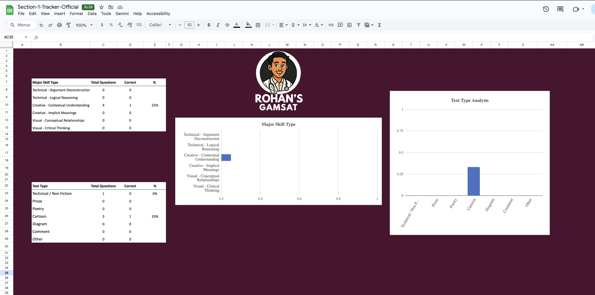

The GAMSAT S1 Tracker used by 200+ students to pinpoint weak spots and make their study radically more efficient. Plug in your question bank attempts and know exactly where to focus next.
Enter your details and get instant access to your copy.

Sound familiar?
Not because they're not working — but because they don't know which question types are actually dragging their score down. Without data, every practice session is a guess.
Completing practice questions feels productive — but if you're not tracking patterns, you're just spinning wheels.
S1 has distinct question categories. Students who know their weak spots can cut prep time in half and still score higher.
You don't have time to figure this out by trial and error. You need a system that tells you where to go right now.
"Read more poetry." "Do more humanities." That's not a plan. You need data specific to your own attempts.
What's inside
See your accuracy across every S1 category — prose, poetry, visual, humanities, social sciences — so you know exactly where the gaps are.
Log your attempts and the tracker does the maths. No manual calculations, no guessing — just clean data you can act on.
ACER practice exams, Gold Standard, Griffiths — it doesn't matter which resource you're using. The tracker is question-bank agnostic.
Track multiple sittings and watch your weak areas improve session by session, with visual feedback you can actually feel good about.
Download, make a copy in Google Sheets, log your first session. No setup tutorials. No confusing formulas to learn.
How it works
No complicated setup. No learning curve. Just log your first attempt and you'll know exactly where to focus.
Submit your name and email to get immediate access to your own copy of the tracker via Google Sheets.
After each practice session, take 2 minutes to enter your results by question type. The tracker does the rest.
Your weakest question categories surface immediately. Spend your next session there instead of reviewing what you already know.
What students say
"I'd been doing practice questions for months without improving. The tracker showed me immediately that I was losing almost all my points on poetry and visual arts questions — I'd completely neglected them. Two weeks of targeted work later, my accuracy in those categories jumped from 45% to 71%."
S1 score improved by 14 points
"Before the tracker I was doing 80 questions a week and feeling like I wasn't getting anywhere. Turns out I was getting 90% on prose but only 40% on social sciences. I spent two weeks exclusively on that and my overall score went up significantly. I wish I'd had this in month one."
Passed the S1 threshold for the first time
"Genuinely the most useful free resource I've found for GAMSAT prep. It's simple, it works, and it tells you what to do next. I've recommended it to every student in my study group."
S1 score: 57 to 70
FAQ
Yes, completely free. You enter your name and email, and you get immediate access to the Google Sheets tracker. No payment, no trial, no upsell required to use it.
Any of them. ACER practice exams, Gold Standard, Griffiths, Des Barker — it doesn't matter which resource you're using. You log your results by question type, not by bank-specific question numbers.
No. You just need a free Google account. Make a copy of the sheet, type your numbers into the yellow input cells, and the charts and scores update automatically. No formula knowledge needed.
About 2 minutes after each practice session. Log how many questions you attempted and got right per category, and the tracker does the rest. Most students update it once a week.
Yes — you'll join Rohan's GAMSAT email list and occasionally receive tips, free resources, and updates on courses. You can unsubscribe at any time with one click. No spam, no daily floods.
Get the tracker free. Know your weak spots by tonight.
Free. Takes 30 seconds.